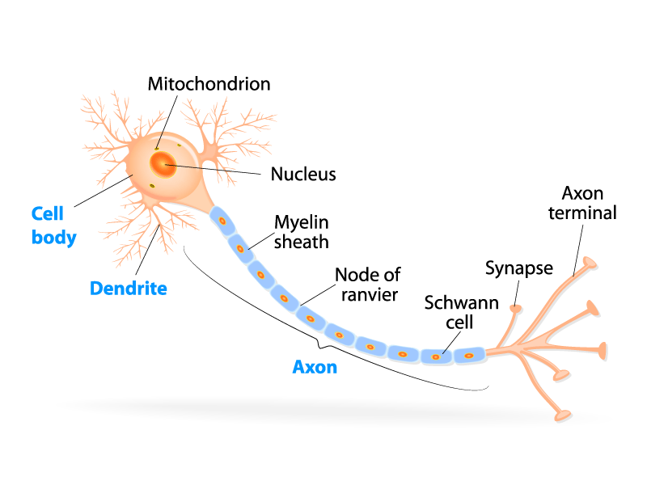

"Talk is cheap. Show me the code."
Linus Torvalds
About Me
Hello! My name is Pablo, and I'm a passionate computer science professional dedicated to transforming ideas into functional solutions. With a strong background in software and web development and data analysis, I thrive on challenges that allow me to leverage technology to solve complex problems.
This website is an excercise I made to showcase myself in a neat and centralised way. If you're already interested, there's a more simplified version in my CV, available for download here:
My Background
I was born Gran Canaria, an island in the middle of the atlantic ocean, where I spent most of my youth. Since young, I've always had a passion for problem solving, puzzles and curiosity through analysis. On my high school years, I was able to go abroad to study in Ireland, where I managed to become proficient on the language and exposed to a different culture.
On my free time I enjoy everything related to tinkering with machines, with a special highlight on operating systems such as linux based, aswell as developing software of the ideas I come across.
I earned my degree in Computer Engineering from of Las Palmas de Gran Canaria (ULPGC), where I developed a solid foundation in programming, operative systems and software arquitecture; which I have put to use throught various projects, internships, and my working career.
My Work Experience
Infrastructure Optimization Project at Telefónica España
September 2024- Now
- Acted as a project coordinator within an initiative to identify, analyze, and decommission unused or underutilized infrastructure.
- Analyzed infrastructure, licensing, power consumption, and fiscal data to quantify cost-saving opportunities.
- Used Power BI to consolidate data from multiple sources, creating dashboards and KPIs to track progress, savings, and optimization impact.
Change & Incident Management at Telefónica España
December 2022 - September 2024
- Managed and analyzed change and incident tickets using BMC ITSM, supporting the stability of the company's internal Telco architecture.
- Proactively designed and developed an internal incident referencing web application, improving data quality and enabling application availability tracking and service reliability KPIs.
- Built Power BI dashboards to analyze incident trends, change impact, availability metrics, and operational performance.
Improvement of digital infrastructure at Asesoría Lin
January 2022 - June 2022
- Helped improved the digital infrastructure at a consultant's office by adapting it to remote work with the use of VPN networking.
- Migrated programs and management to local server within the office running Windows server.
- Improved security in already existing machines by setting up new passwords, improving firewall and user restrictions.
Web Developer Intern at TcaTik
September 2021 - December 2021
- Worked on the company's developers' team.
- Contributed to the completion of several web e-commerce projects using the Laravel framework for the front end.
- Designed and assisted in the deployment of the backend MySQL database.
- Helped locate problems and bugs on the local and remote testing with the use of Chrome Developer Tools, and later contributed to solve said problems.
My Work Background
Microscopy for 3DSlicer
In a first stage of the project, the software application 3DSlicer will be used for the visualization and segmentation of microscopy images. Since this application is composed of numerous modules, extensions and datasets among others, a new extension for the sementation of microsocopy images has been developed.
Natural Neuronal Networks
We refer to biological neural network. A series of neurons interconnected that once activated defines a recognizable linear pathway.
The axon terminals are connected via synapses to dendrites on other neurons. and they can be seen as the simplified version of a natural neuron. These nodes connections between artificial networks can be seen as a simplified version of the synapse, they can transmit signals from one to another.
A paradigm of automatic learning and processing inspired by the way the biological nervous system works.

Artificial Neuronal Networks
We refer to computing systems inspired by the biological neural networks. Yes, the ones of the animal brains. Such systems "learn" tasks from examples.
An ANN is a system based on a collection of connected units or nodes. These nodes are called artificial neurons and they can be seen as the simplified version of a natural neuron. These nodes connections between artificial networks can be seen as a simplified version of the synapse, they can transmit signals from one to another.
A paradigm of automatic learning and processing inspired by the way the biological nervous system works.